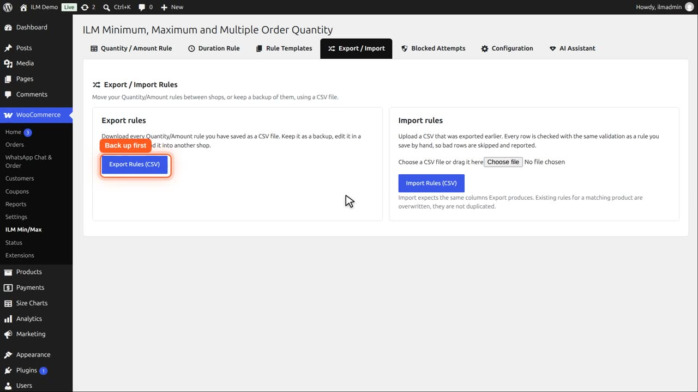
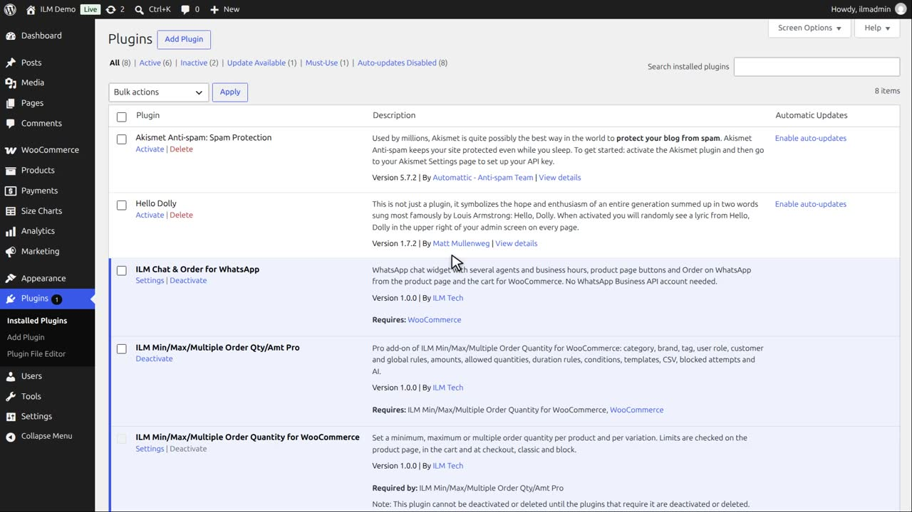
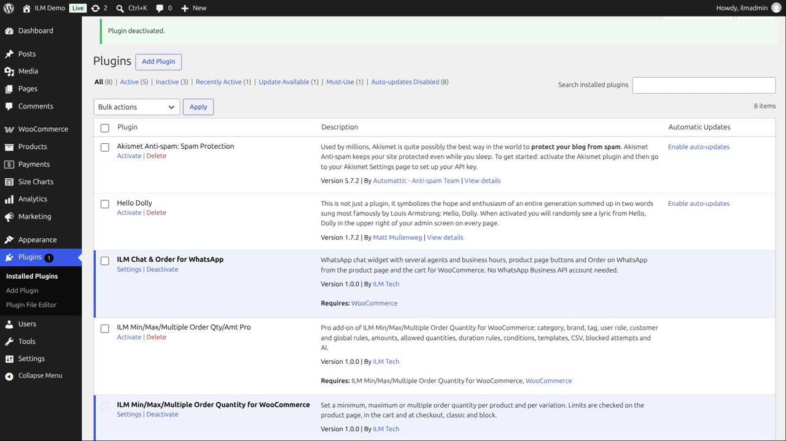
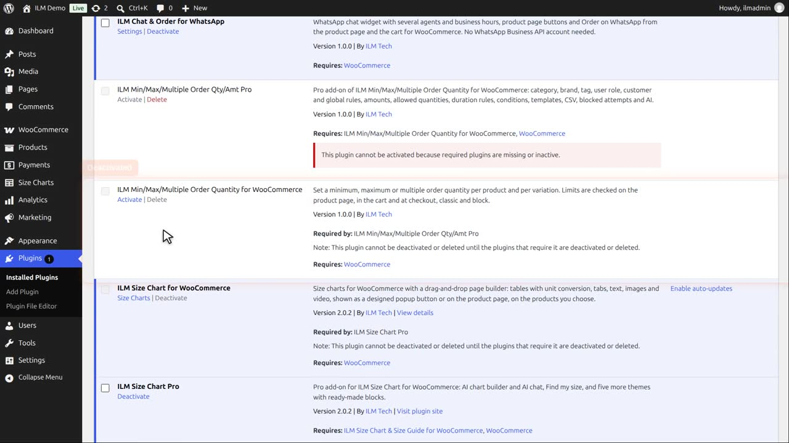
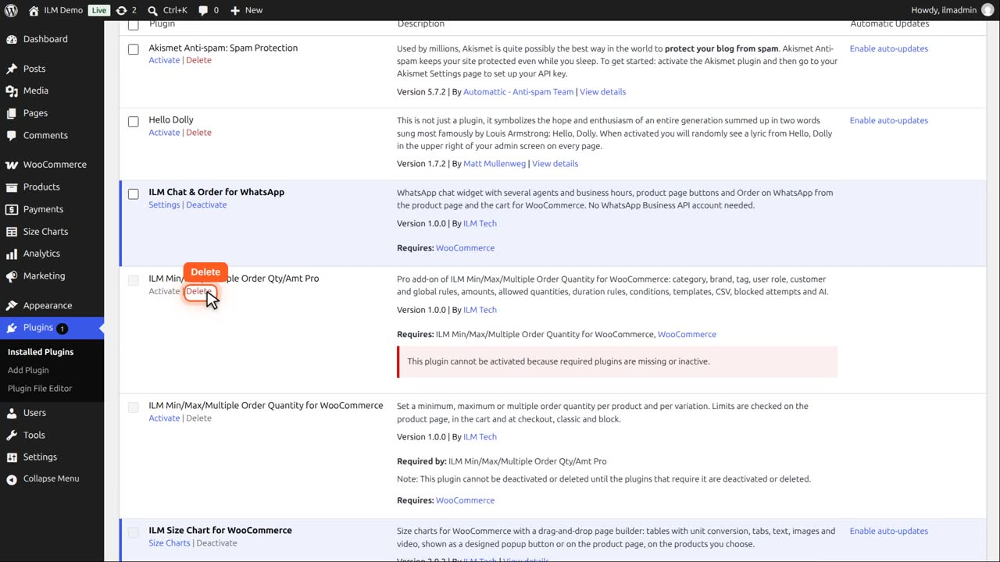
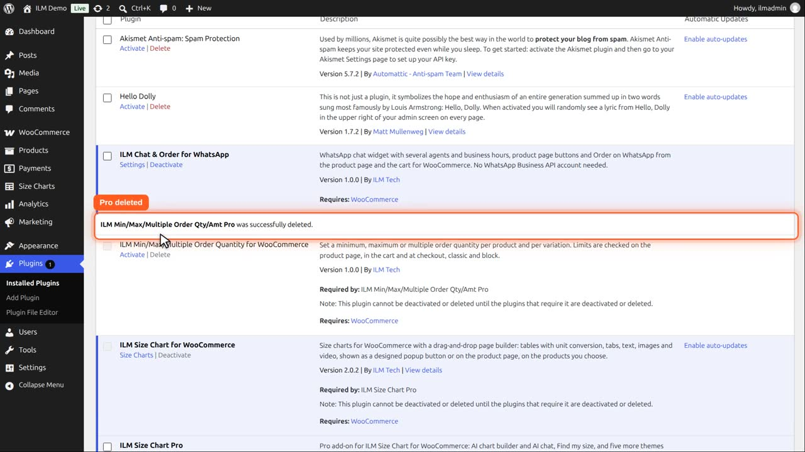
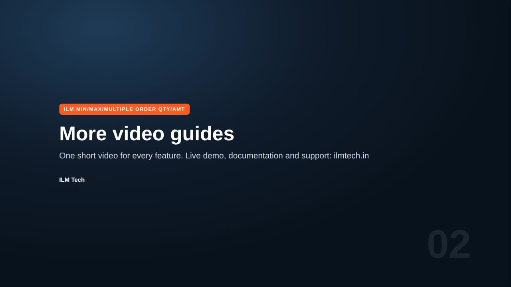

Deactivate switches a plugin off and keeps your rules: the shop no longer checks any limit, but nothing is deleted. Delete removes the plugin with its files; deleting the free plugin also deletes its rules and settings.
Delete the Pro add-on before the free plugin: WordPress keeps the free plugin until the add-on that needs it is gone. To keep your rules, export them first on the Export and Import tab.
Deleting the plugin deletes all rules and settings. To keep them, export your rules first on the Export and Import tab.

Then open Plugins. Start with the Pro add-on.

Click Deactivate. Pro is off, and your rules stay as they are. Deactivate only, if you just want to switch it off for a while.

Deactivate the free plugin too. The shop no longer checks any limit, but nothing is deleted yet.

Delete removes a plugin with its files. Delete the Pro add-on first: WordPress keeps the free plugin until the add-on that needs it is gone.

Click Delete and confirm. The Pro add-on is deleted.

Reload the Plugins page, then delete the free plugin. This also deletes its rules and settings. To use it again, install it as shown in the install video.
